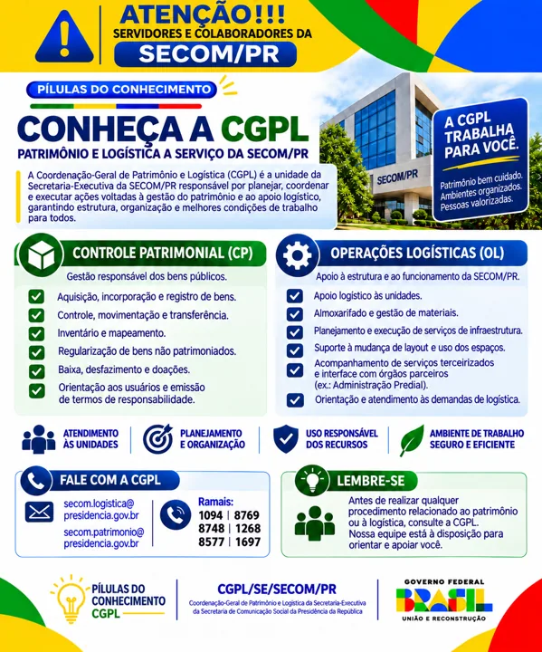
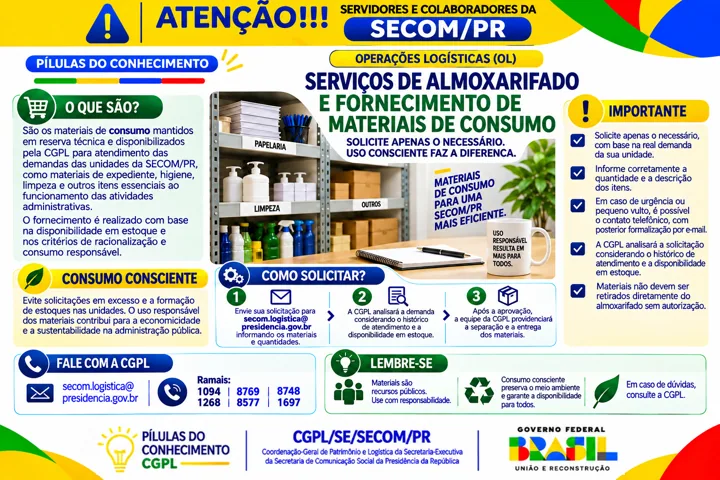
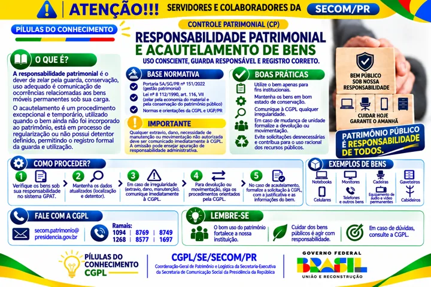
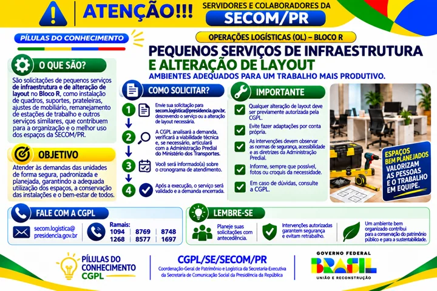
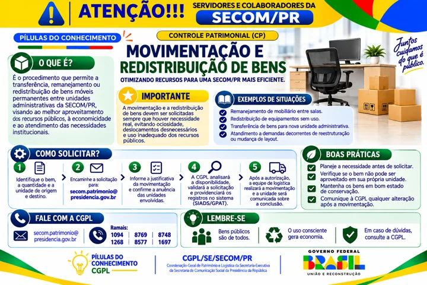
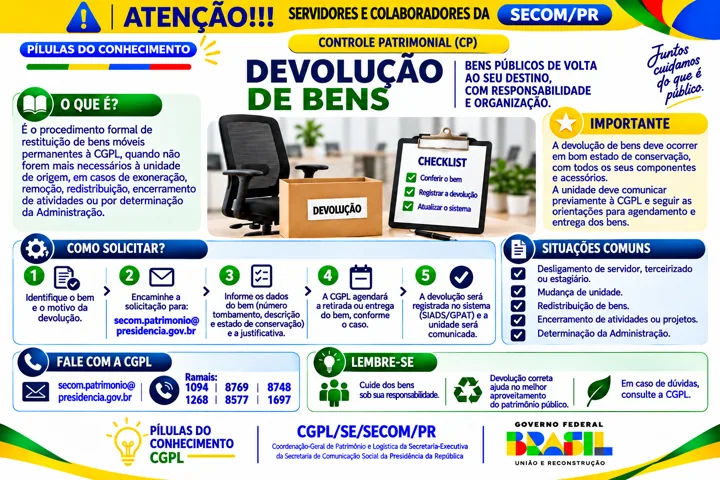
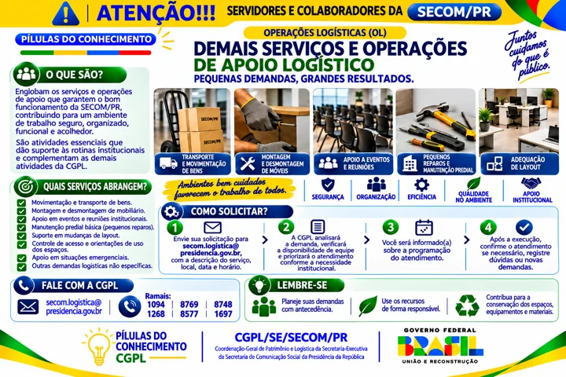

COORDENAÇÃO-GERAL DE PATRIMÔNIO E LOGÍSTICA
Pílulas do
Conhecimento
Orientações que geram resultados.
Informações objetivas para servidores e colaboradores da SECOM/PR sobre controle patrimonial, operações logísticas e orientações relacionadas ao Bloco R.
15pílulas disponíveis
✦
Conhecimento ao alcance de todos
Consulte as artes das Pílulas do Conhecimento e os documentos de referência da CGPL. Os conteúdos estão disponíveis para visualização e download, em um único endereço.
BIBLIOTECA DIGITAL
Explore as Pílulas
Selecione um tema ou pesquise pelo assunto desejado.


Almoxarifado e fornecimento de material

Requisição de bens

Engenharia e arquitetura


Responsabilidade e acautelamento de bens


Pequenos serviços de infraestrutura e alteração de layout – Bloco R


Movimentação e redistribuição de bens

Acesso e uso das instalações – Bloco R


Devolução de bens


Demais serviços de operações logísticas

Inventário e mapeamento

Serviços gráficos

Salas de reunião e administração predial – Bloco R

Serviços de TIC

Agradecimento

Nenhuma Pílula encontrada para esta busca.
DOCUMENTOS DE REFERÊNCIA
Notas Técnicas e anexos
Consulte os documentos que fundamentam as orientações da CGPL.
Controle Patrimonial
Nota Técnica nº 1/2026/CP e Anexo I.
Abrir Nota TécnicaAbrir Anexo IOperações Logísticas
Nota Técnica nº 1/2026/OL e Anexo I.
Abrir Nota TécnicaAbrir Anexo IOperações Logísticas – Bloco R
Nota Técnica nº 2/2026/OL.
Abrir Nota TécnicaIDENTIDADE DO PROJETO
Tela de descanso
Arte institucional das Pílulas do Conhecimento para uso como plano de fundo.
Baixar imagem